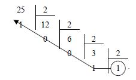

| Lettre | Mot |
| Chiffre | Nombre |
Avec les chiffres, on forme des nombres, qui ont comme les mots une signification dans l'univers qu'on étudie.
Notation
"45 en base 10 = 101101 en base 2" se note :(45)10 = (101101)2
Base 10 - Système décimal
Nous sommes habitués à compter en base 10, c'est à dire que nous utilisons 10 chiffres différents pour former des nombres : 0, 1, 2, 3, 4, 5, 6, 7, 8, 9.Lorsqu'on forme un nombre, on utilise les puissances successives de 10.
2 652
|
= 2 x 1000 + 6 x 100 + 5 x 10 + 2
|
= 2 x 103 + 6 x 102 + 5 x 101 + 2 x 100
|
(2 652)10 = (2 652)10
| 104 10 000 |
103 1 000 |
102 100 |
101 10 |
100 1 |
SOMME base 10 |
|---|---|---|---|---|---|
| 2 | 6 | 5 | 2 | ||
| 2 000 | + 600 | + 50 | + 2 | = 2 652 |
Base 7
Si on comptait en base 7, on ne disposerait que de 7 chiffres : 0, 1, 2, 3, 4, 5, 6.Le nombre 2 652 écrit en base 7 ne représente pas la même quantité que 2 652 écrit en base 10 :
| 74 2 401 |
73 343 |
72 49 |
71 7 |
70 1 |
SOMME base 7 |
|---|---|---|---|---|---|
| 2 | 6 | 5 | 2 | ||
| 2 x 343 | 6 x 49 | 5 x 7 | 2 x 1 | ||
| 646 | + 294 | + 35 | + 2 | = 977 |
(2 652)7 = (977)10
Base 2 - Système binaire
En base 2, nous n'utilisons que 2 chiffres : 0 et 1.Le principe pour écrire un nombre est le même qu'en base 10.
Par exemple,
101101
|
= 1 x 25 + 0 x 24 + 1 x 23 + 1 x 22 + 0 x 21 + 1 x 20
|
= 32 + 8 + 4 + 1
|
|
= 45
|
(101101)2 = (45)10
| 210 1024 |
29 512 |
28 256 |
27 128 |
26 64 |
25 32 |
24 16 |
23 8 |
22 4 |
21 2 |
20 1 |
SOMME |
|---|---|---|---|---|---|---|---|---|---|---|---|
| 1 32 |
0 0 |
1 8 |
1 4 |
0 0 |
1 1 |
45 |
Conversion base 2 → base 10
On utilise simplement la définition précédente pour faire le calcul.Exercices
Convertir en base 10 les nombres suivants exprimés en base 2 :
011011110001001101010110110
Conversion base 10 → base 2
Méthode des restes
Par exemple, si on veut convertir le nombre 45 en base 2 :
On se demande : quelle est la plus grande puissance de 2 qui "tient" dans 45 ?
La réponse est 32 (25).
Nous indique qu'il y a un 1 dans le 6ème bit :
| 25 32 |
24 16 |
23 8 |
22 4 |
21 2 |
20 1 |
SOMME |
|---|---|---|---|---|---|---|
| 1 32 |
? ? |
? ? |
? ? |
? ? |
? ? |
45 |
On recommence avec 13 : quelle est la plus grande puissance de 2 qui "tient" dans 13 ?
La réponse est 8 = 23
| 25 32 |
24 16 |
23 8 |
22 4 |
21 2 |
20 1 |
SOMME |
|---|---|---|---|---|---|---|
| 1 32 |
0 0 |
1 8 |
? ? |
? ? |
? ? |
45 |
On recommence avec 5 : quelle est la plus grande puissance de 2 qui "tient" dans 5 ?
La réponse est 4 = 22
| 25 32 |
24 16 |
23 8 |
22 4 |
21 2 |
20 1 |
SOMME |
|---|---|---|---|---|---|---|
| 1 32 |
0 0 |
1 8 |
1 1 |
? ? |
? ? |
45 |
On recommence avec 1 : quelle est la plus grande puissance de 2 qui "tient" dans 1 ?
La réponse est 1 = 20
| 25 32 |
24 16 |
23 8 |
22 4 |
21 2 |
20 1 |
SOMME |
|---|---|---|---|---|---|---|
| 1 32 |
0 0 |
1 8 |
1 4 |
0 0 |
1 1 |
45 |
Reste à caser 1 - 1 = 0
Lorsque le reste vaut 0, le processus est terminé.
Finalement,
45 = 25 + 23 + 22 + 20
Ecrire en base 2 les nombres suivants écrits en base 10.
01231054255256473
Conversion base 10 → base 2
Méthode des divisions successives
La méthode de la division successive sert à transformer n'importe quel nombre dans n'importe quelle base.
Pour transformer un nombre décimal en un nombre de base « a », il suffit de diviser le nombre décimal par la base « a » jusqu'à obtenir un quotient inférieur à la base. Le résultat recherché se compose du dernier quotient et de tous les restes des divisions successives pris dans l'ordre inverse.

Addition, multiplication binaire
Fonctionne comme en base 10, mais les tables d'addition et de multiplication sont beaucoup plus simples !
Addition
|
Multiplication
|
1 1 ← retenues
1 0 1
+ 1 1 1
------------
1 1 0 0
Exemple de multiplication :
1 0 1 0
x 1 0 1 1
---------------
1 0 1 0
1 0 1 0
0 0 0 0
1 0 0 0
---------------
1 0 1 1 1 1 0
Effectuer les additions binaires suivantes :
- 10 + 101
- 111 + 101
- 100101 + 111101
Effectuer les multiplications binaires suivantes :
- 100 x 100
- 10001 x 110
Remarques
Exprimer une puissance de 2
Une puissance exacte de 2 (1, 2, 4, 8...) est très facile à exprimer en base 2.Par exemple,
64 = 26 = 64 = 1 x 26 + 0 x 25 + 0 x 24 + 0 x 23 + 0 x 22 + 0 x 21 + 0 x 20
Donc
(64)10 = (1000000)2
Remarquez que la situation est identique pour toutes les bases, par exemple :
- Base 2 :
(64)10 = (1000000)2 - Base 3 :
(27)10 = (1000)3 - Base 4 :
(64)10 = (1000)4 - Base 5 :
(125)10 = (1000)5
Multiplier par 2
En base 2, multiplier par 2 revient à "rajouter un 0 à droite".Par exemple
(45)10 = (101101)2
(45)10 = 1 x 25 + 0 x 24 + 1 x 23 + 1 x 22 + 0 x 21 + 1 x 20
(90)10 = 1 x 26 + 0 x 25 + 1 x 24 + 1 x 23 + 0 x 22 + 1 x 21 + 0 x 20
On a la multiplication binaire :
101101 x 10 = 1011010
On est exactement dans la même situation que lorsqu'on multiplie par 10 en base 10.
Octets
On appelle octet un nombre exprimé en binaire constitué de 8 chiffres (0 ou 1).Ex :
1 0 1 1 0 0 1 0
On dit que un octet est un mot binaire de longueur 8 (on appelle mot binaire une suite de 0 et de 1).
La mémoire de l'ordinateur conserve toutes les données sous forme binaire. Pour stocker des caractères, on a associé à chaque caractère un code numérique : c'est le code ASCII (American Standard Code for Information Interchange - « Code Americain Standard pour l'Echange d'Informations »). Le code ASCII d'origine représentait les caractères sur 7 bits (c'est-à-dire 128 caractères possibles, de 0 à 127).
Pour les lettres majuscules, on a :
Pour les lettres minuscules, on a :
En utilisant le code ASCII, représentez comment le mot SALUT est stocké en mémoire.
En remarquant que 65 + 32 = 97, représentez comment le mot salut (en minuscules) est stocké en mémoire, sans refaire la conversion pour chaque lettre.
Pour les lettres majuscules, on a :
A: 65, B: 66 ... Z: 90
Pour les lettres minuscules, on a :
a: 97, b: 98 ... z: 122
En utilisant le code ASCII, représentez comment le mot SALUT est stocké en mémoire.
En remarquant que 65 + 32 = 97, représentez comment le mot salut (en minuscules) est stocké en mémoire, sans refaire la conversion pour chaque lettre.
Représentez sous forme binaire l'adresse IP :
192.168.1.15, sous forme de 4 octets, en rajoutant pour chaque octet des 0 à gauche si nécessaire.
Base 16 - Système hexadécimal
Le principe est le même que pour n'importe quelle base. On a besoin de 16 symboles, et nos 10 chiffres habituels ne suffisent pas, on les complète avec les 6 premières lettres de l'alphabet.| Base 16 | 0 | 1 | 2 | 3 | 4 | 5 | 6 | 7 | 8 | 9 | A | B | C | D | E | F |
|---|---|---|---|---|---|---|---|---|---|---|---|---|---|---|---|---|
| Base 10 | 0 | 1 | 2 | 3 | 4 | 5 | 6 | 7 | 8 | 9 | 10 | 11 | 12 | 13 | 14 | 15 |
Utile pour la suite
| 160 1 | 161 16 | 162 256 | 163 4 096 | 164 65 536 |
|---|---|---|---|---|
| 1 | 16 | 256 | 4 096 | 65 536 |
| 2 | 32 | 512 | 8 192 | 131 072 |
| 3 | 48 | 768 | 12 288 | 196 608 |
| 4 | 64 | 1 024 | 16 384 | 262 144 |
| 5 | 80 | 1 280 | 20 480 | 327 680 |
| 6 | 96 | 1 536 | 24 576 | 393 216 |
| 7 | 112 | 1 792 | 28 672 | 458 752 |
| 8 | 128 | 2 048 | 32 768 | 524 288 |
| 9 | 144 | 2 304 | 36 864 | 589 824 |
| 10 | 160 | 2 560 | 40 960 | 655 360 |
| 11 | 176 | 2 816 | 45 056 | 720 896 |
| 12 | 192 | 3 072 | 49 152 | 786 432 |
| 13 | 208 | 3 328 | 53 248 | 851 968 |
| 14 | 224 | 3 584 | 57 344 | 917 504 |
| 15 | 240 | 3 840 | 61 440 | 983 040 |
| 16 | 256 | 4 096 | 65 536 | 1 048 576 |
160 = 1 |
161 = 16 |
162 = 256 |
163 = 4 096 |
164 = 65 536 |
165 = 1 048 576 |
166 = 16 777 216 |
167 = 268 435 456 |
Conversion base 16 → base 10
Exemple :(1B2)16 |
= (1 x 162 + 11 x 161 + 2 x 160)10 |
= (256 + 176 + 2)10 |
|
= (434)10 |
| 163 4096 |
162 256 |
161 16 |
160 1 |
SOMME base 10 |
|---|---|---|---|---|
| 1 1 x 256 256 |
B 11 x 16 176 |
2 2 x 1 2 |
434 |
(1 A)16 = (1 x 16 + 10 x 1)10 (3 A 5)16 = (3 x 256 + 10 x 16 + 5 x 1)10 (1 0 1 1)16 = (1 x 4096 + 0 x 256 + 1 x 16 + 1 x 1)10 (1 0 1 1)2 = (1 x 8 + 0 x 4 + 1 x 2 + 1 x 1)10 (4096)10 = (162)10 = (100)16
Convertir en base 10 :
(15)16(7)16(F)16(16)16(ABC)16(FADA)16(19DD5)16(28FEC)16
(1 5)16 = = "1 seizaine" + 5 unités = (1 x 16 + 5 x 1)10
(A B C)16
= (A "256aines" + B "seizaine" + C unités)10
= (10 x 256 + 11 x 16 + 12 x 1)10
= (2560 + 176 + 12)10
= (2748)10
Conversion base 10 → base 16
Fonctionne exactement comme en base 2, avec la méthode des restes et la méthode des divisions successives.Exemple utilisant la méthode des restes : convertir le nombre
(853)10 en base 16 :
On se demande : quelle est la plus grande puissance de 16 qui "tient" dans 853 ?
La réponse est 256 (162), que 853 peut contenir 3 fois.
Nous indique qu'il y a un 3 dans la case des 16 3 :
| 162 256 |
161 16 |
160 1 |
SOMME Base 10 |
|---|---|---|---|
| 3 3 x 256 = 768 |
? ? |
? ? |
853 |
On recommence avec 85 : quelle est la plus grande puissance de 16 qui "tient" dans 85 ?
La réponse est 16 (161), que 853 peut contenir 5 fois.
| 162 256 |
161 16 |
160 1 |
SOMME Base 10 |
|---|---|---|---|
| 3 3 x 256 = 768 |
5 5 x 16 = 80 |
? ? |
853 |
On recommence avec 5 : quelle est la plus grande puissance de 16 qui "tient" dans 8 ?
La réponse est 1 (160), que 5 peut contenir 5 fois.
| 162 256 |
161 16 |
160 1 |
SOMME Base 10 |
|---|---|---|---|
| 3 3 x 256 = 768 |
5 5 x 16 = 80 |
? 5 x 1 = 5 |
853 |
Finalement,
(853)10 = (355)16
Convertir en base 16 :
(15)10(16)10(26)10(100)10(255)10(15 945)10(41 628)10
Addition en base 16
| + | 0 | 1 | 2 | 3 | 4 | 5 | 6 | 7 | 8 | 9 | A | B | C | D | E | F |
|---|---|---|---|---|---|---|---|---|---|---|---|---|---|---|---|---|
| 0 | 0 | 1 | 2 | 3 | 4 | 5 | 6 | 7 | 8 | 9 | A | B | C | D | E | F |
| 1 | 1 | 2 | 3 | 4 | 5 | 6 | 7 | 8 | 9 | A | B | C | D | E | F | 10 |
| 2 | 2 | 3 | 4 | 5 | 6 | 7 | 8 | 9 | A | B | C | D | E | F | 10 | 11 |
| 3 | 3 | 4 | 5 | 6 | 7 | 8 | 9 | A | B | C | D | E | F | 10 | 11 | 12 |
| 4 | 4 | 5 | 6 | 7 | 8 | 9 | A | B | C | D | E | F | 10 | 11 | 12 | 13 |
| 5 | 5 | 6 | 7 | 8 | 9 | A | B | C | D | E | F | 10 | 11 | 12 | 13 | 14 |
| 6 | 6 | 7 | 8 | 9 | A | B | C | D | E | F | 10 | 11 | 12 | 13 | 14 | 15 |
| 7 | 7 | 8 | 9 | A | B | C | D | E | F | 10 | 11 | 12 | 13 | 14 | 15 | 16 |
| 8 | 8 | 9 | A | B | C | D | E | F | 10 | 11 | 12 | 13 | 14 | 15 | 16 | 17 |
| 9 | 9 | A | B | C | D | E | F | 10 | 11 | 12 | 13 | 14 | 15 | 16 | 17 | 18 |
| A | A | B | C | D | E | F | 10 | 11 | 12 | 13 | 14 | 15 | 16 | 17 | 18 | 19 |
| B | B | C | D | E | F | 10 | 11 | 12 | 13 | 14 | 15 | 16 | 17 | 18 | 19 | 1A |
| C | C | D | E | F | 10 | 11 | 12 | 13 | 14 | 15 | 16 | 17 | 18 | 19 | 1A | 1B |
| D | D | E | F | 10 | 11 | 12 | 13 | 14 | 15 | 16 | 17 | 18 | 19 | 1A | 1B | 1C |
| E | E | F | 10 | 11 | 12 | 13 | 14 | 15 | 16 | 17 | 18 | 19 | 1A | 1B | 1C | 1D |
| F | F | 10 | 11 | 12 | 13 | 14 | 15 | 16 | 17 | 18 | 19 | 1A | 1B | 1C | 1D | 1E |
Calculer les additions suivantes en base 16 :
- (8 + 5)16
- (A + B)16
- (FF + 1)16
- (1F4 + 102)16
Multiplication en base 16
| x | 0 | 1 | 2 | 3 | 4 | 5 | 6 | 7 | 8 | 9 | A | B | C | D | E | F |
|---|---|---|---|---|---|---|---|---|---|---|---|---|---|---|---|---|
| 0 | 0 | 0 | 0 | 0 | 0 | 0 | 0 | 0 | 0 | 0 | 0 | 0 | 0 | 0 | 0 | 0 |
| 1 | 0 | 1 | 2 | 3 | 4 | 5 | 6 | 7 | 8 | 9 | A | B | C | D | E | F |
| 2 | 0 | 2 | 4 | 6 | 8 | A | C | E | 10 | 12 | 14 | 16 | 18 | 1A | 1C | 1E |
| 3 | 0 | 3 | 6 | 9 | C | F | 12 | 15 | 18 | 1B | 1E | 21 | 24 | 27 | 2A | 2D |
| 4 | 0 | 4 | 8 | C | 10 | 14 | 18 | 1C | 20 | 24 | 28 | 2C | 30 | 34 | 38 | 3C |
| 5 | 0 | 5 | A | F | 14 | 19 | 1E | 23 | 28 | 2D | 32 | 37 | 3C | 41 | 46 | 4B |
| 6 | 0 | 6 | C | 12 | 18 | 1E | 24 | 2A | 30 | 36 | 3C | 42 | 48 | 4E | 54 | 5A |
| 7 | 0 | 7 | E | 15 | 1C | 23 | 2A | 31 | 38 | 3F | 46 | 4D | 54 | 5B | 62 | 69 |
| 8 | 0 | 8 | 10 | 18 | 20 | 28 | 30 | 38 | 40 | 48 | 50 | 58 | 60 | 68 | 70 | 78 |
| 9 | 0 | 9 | 12 | 1B | 24 | 2D | 36 | 3F | 48 | 51 | 5A | 63 | 6C | 75 | 7E | 87 |
| A | 0 | A | 14 | 1E | 28 | 32 | 3C | 46 | 50 | 5A | 64 | 6E | 78 | 82 | 8C | 96 |
| B | 0 | B | 16 | 21 | 2C | 37 | 42 | 4D | 58 | 63 | 6E | 79 | 84 | 8F | 9A | A5 |
| C | 0 | C | 18 | 24 | 30 | 3C | 48 | 54 | 60 | 6C | 78 | 84 | 90 | 9C | A8 | B4 |
| D | 0 | D | 1A | 27 | 34 | 41 | 4E | 5B | 68 | 75 | 82 | 8F | 9C | A9 | B6 | C3 |
| E | 0 | E | 1C | 2A | 38 | 46 | 54 | 62 | 70 | 7E | 8C | 9A | A8 | B6 | C4 | D2 |
| F | 0 | F | 1E | 2D | 3C | 4B | 5A | 69 | 78 | 87 | 96 | A5 | B4 | C3 | D2 | E1 |
Calculer les multiplications suivantes en base 16 :
- (8 x 5)16
- (A x B)16
- (FF x FF)16
- (1F4 x 102)16
Conversion base 16 → base 2
Le fait que16 = 24 permet un passage facile entre ces deux bases.
Utilisations de l'hexadécimal
En programmation, la valeur d'un nombre exprimé en hexadécimal est généralement préfixée de0x.
Par exemple :
a = 0x12 // signifie (12)16 = (18)10 b = 12 // signifie (12)10
Recherche perso
Regardez comment les codes couleurs sont fabriqués en html. Chaque composante rouge, vert, bleu est exprimée en hexadécimal.
Exercice d'application : Couleurs javascript.
Recherche perso
Trouvez une description de la fabrication d'une IP V6 et voyez comment la base 16 est utilisée.